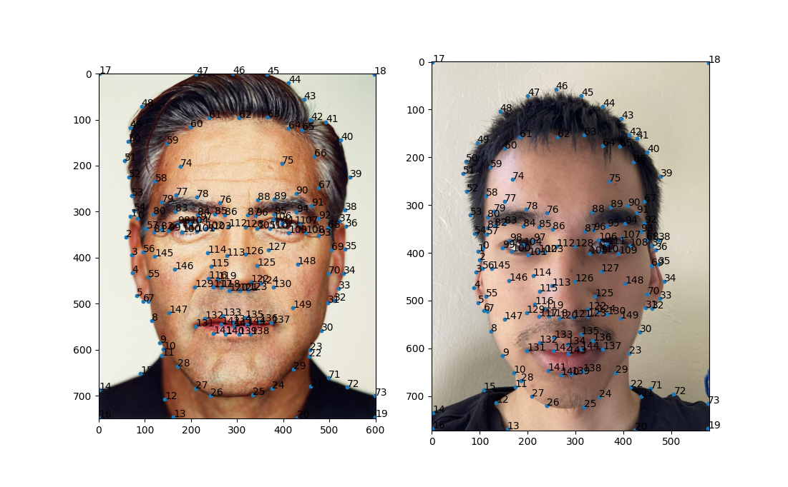
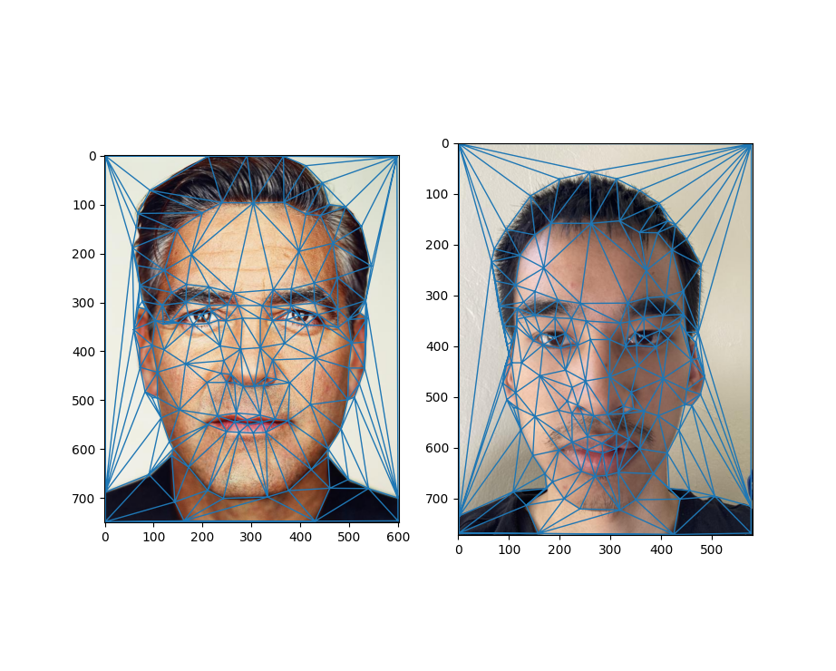

Defining Correspondences
To morph one image to another, I would need to define keypoints in both images such that one image's keypoints map to the other. I used python's ginput function from matplotlib to define the keypoints:
In selecting the keypoints, I had to make sure that close keypoints were not colinear to ensure that there was a triangulation. Also important was ensuring that the resulting triangles well partitioned the image such that no two different elements were in the same triangle. For example, if a triangle corresponding to the first image captured some of the hair and the background while the other did not, a fragment of the hair would morph inconsitantly with the rest of the hair. Finally, keypoints were set in the corners to ensure that the entire image was morphed and not just the head.
